R$ 1.250/mês + Condomínio R$ 440 + IPTU R$ 130 (Total R$ 1.820/mês sem seguros)
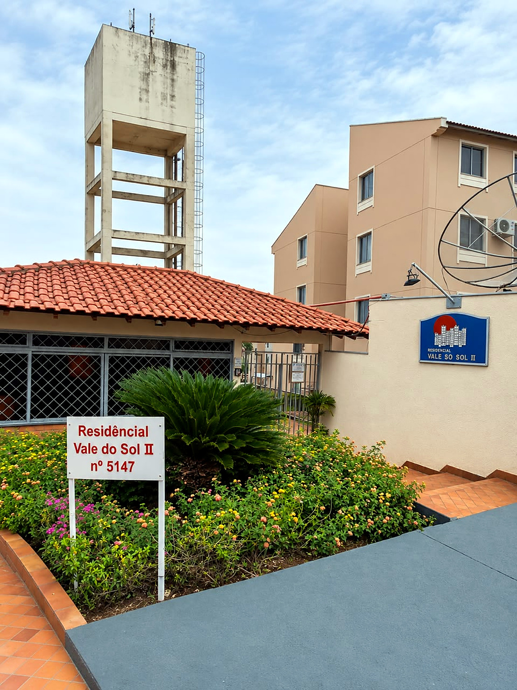
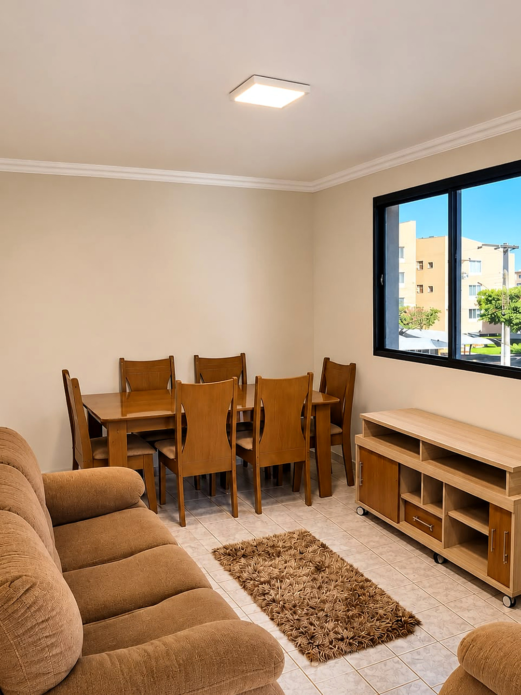
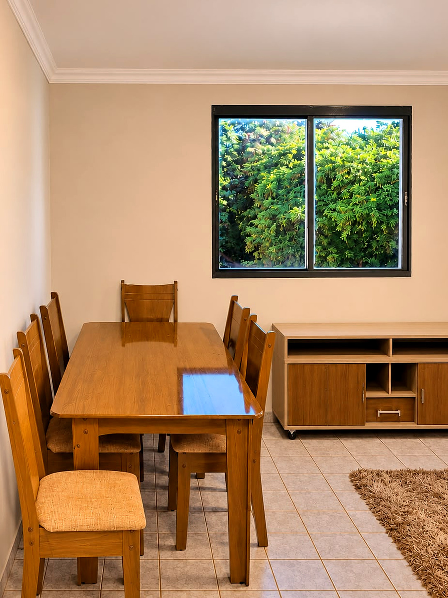
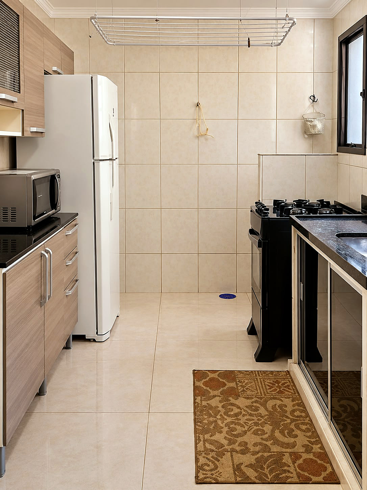
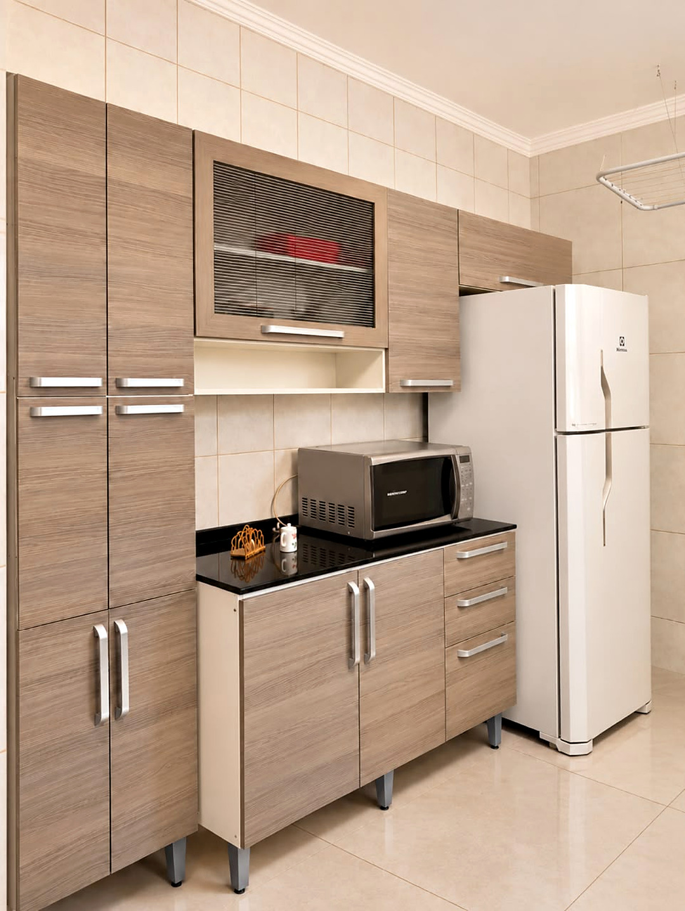
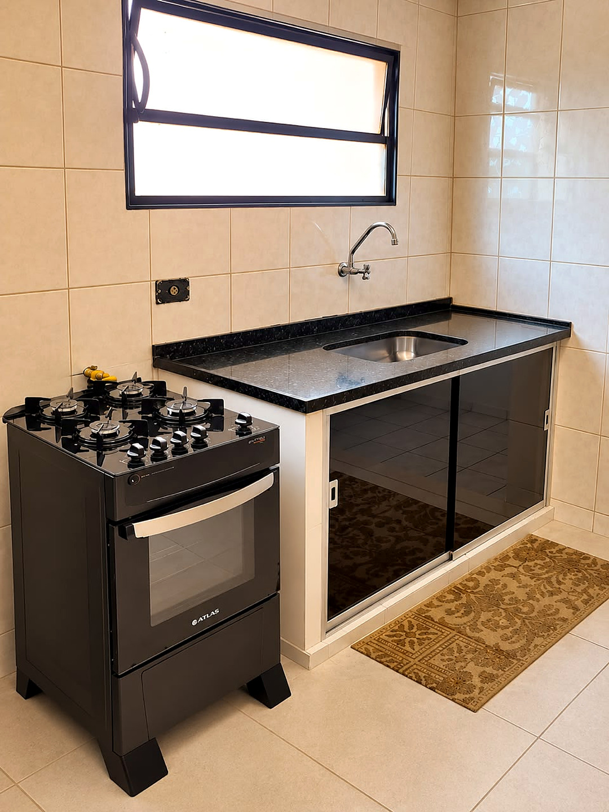
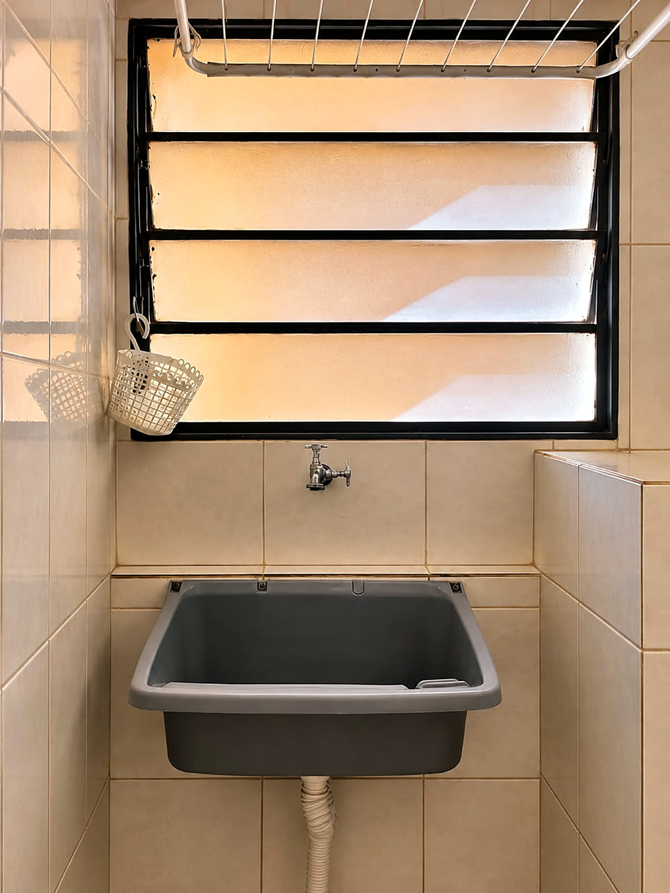
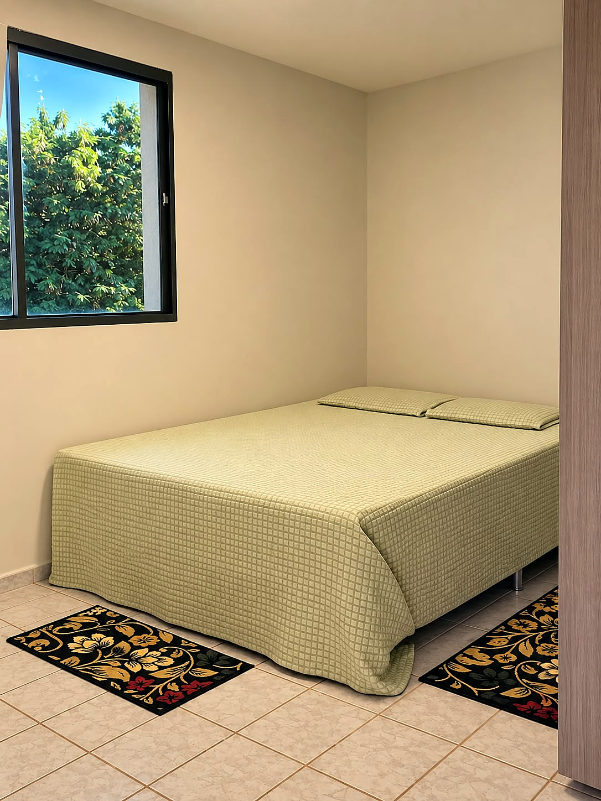
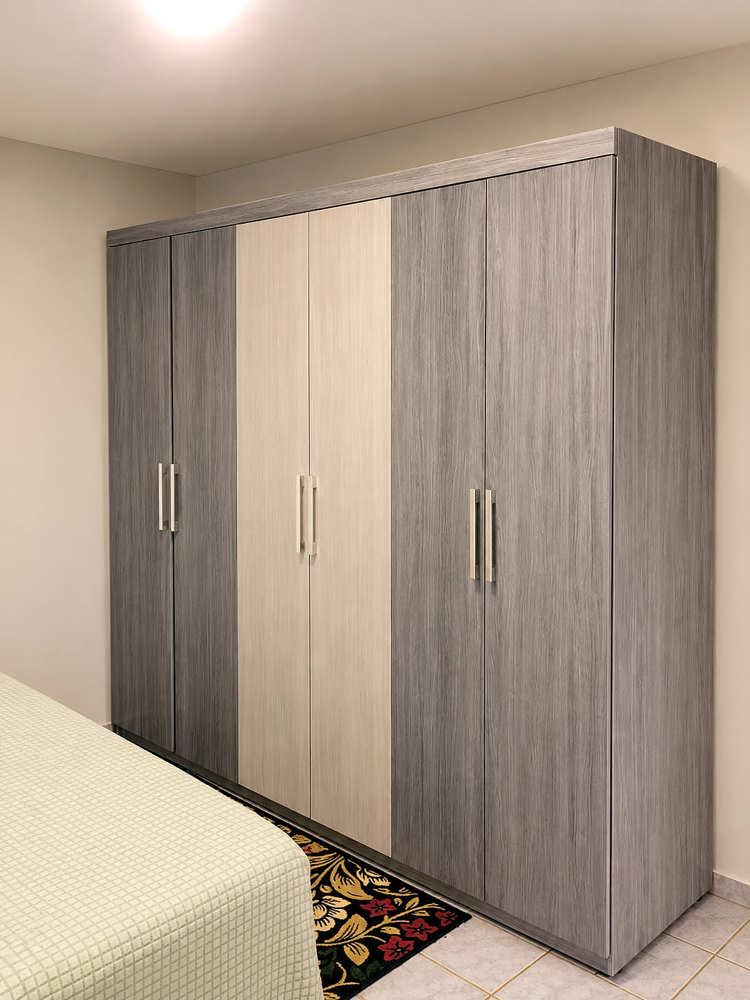
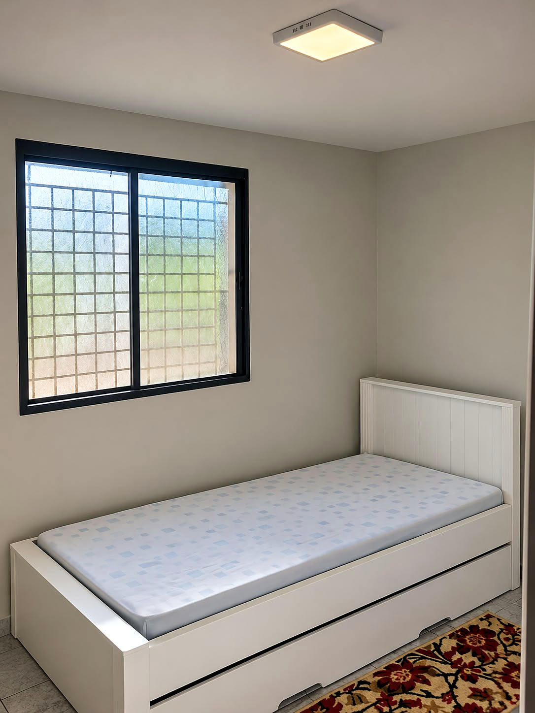
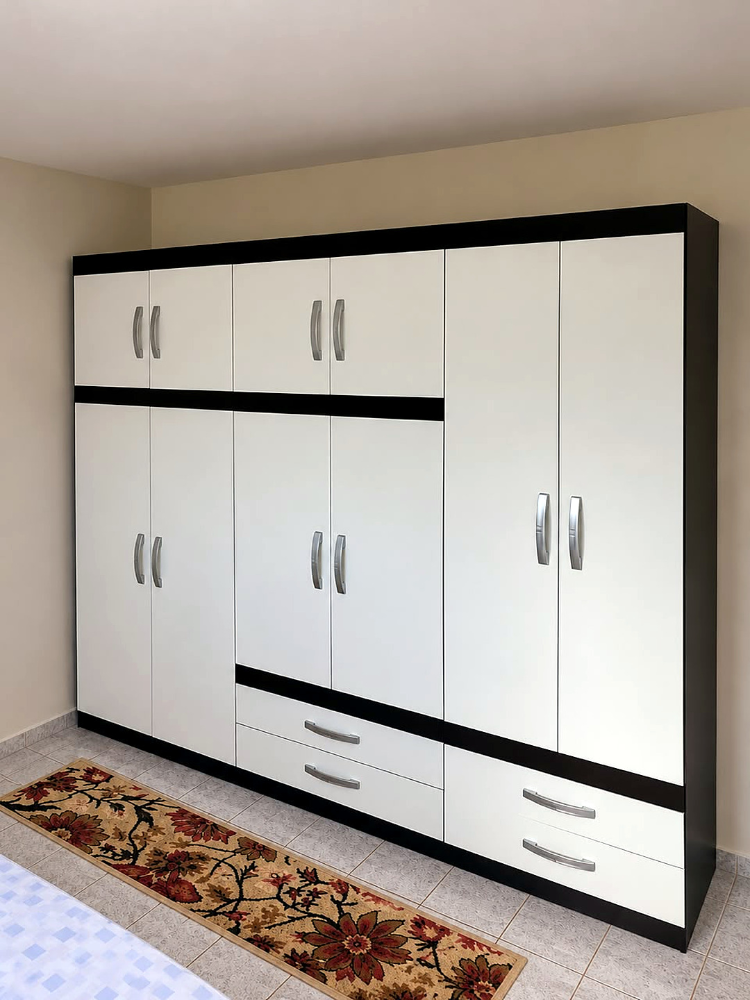
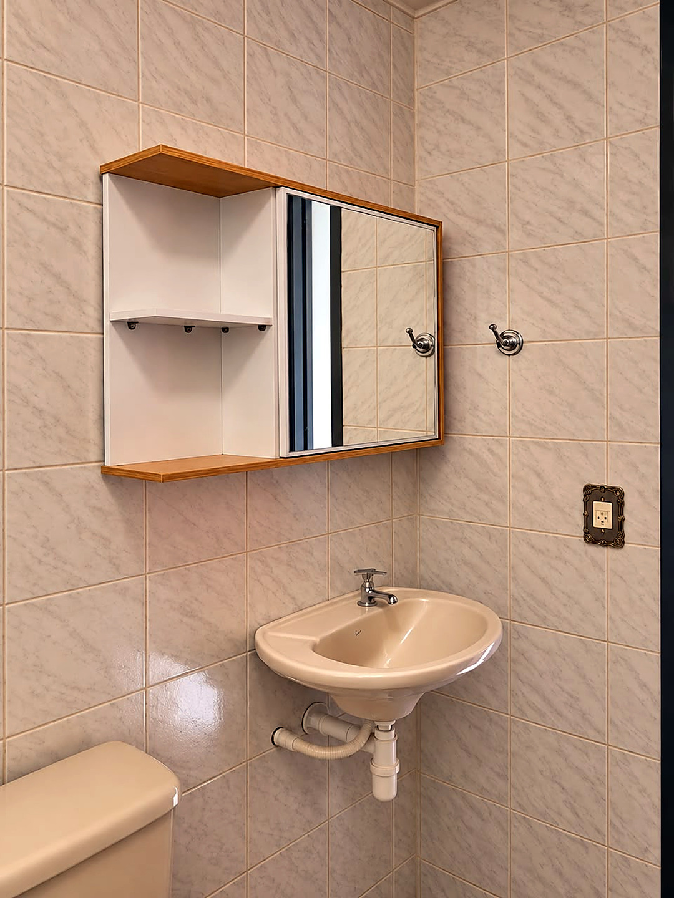
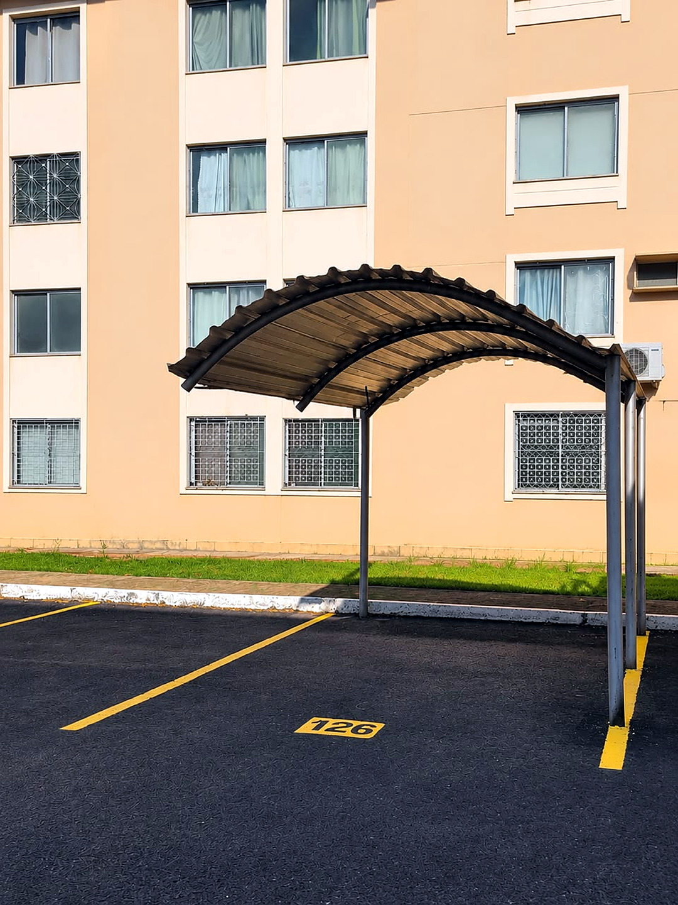
Apartamento mobiliado para locação no Condomínio Residencial Vale do Sol II, localizado na Rua 14 de Julho, 5147 - Monte Castelo, Campo Grande/MS.
CARACTERÍSTICAS DO IMÓVEL:
- 50 m² de área útil | 65 m² de área total
- 1º andar
- 2 quartos mobiliados (cama de casal, cama de solteiro e guarda-roupas)
- Sala de estar e jantar mobiliada (sofá, rack de TV e mesa com 6 cadeiras)
- Cozinha mobiliada com armários planejados, geladeira, fogão 4 bocas e micro-ondas
- Área de serviço com tanque e varal
- Banheiro social com armário espelhado
- Ar-condicionado
- 1 vaga de garagem coberta
ESTRUTURA DO CONDOMÍNIO:
- Condomínio fechado
- Espaço gourmet
- Salão de festas
- Quadra poliesportiva
VALORES E CONDIÇÕES:
- Aluguel: R$ 1.250,00 / mês
- Condomínio: R$ 440,00 / mês
- IPTU: R$ 130,00 / mês
- Total mensal: R$ 1.820,00 (sem seguros)
- Seguro-fiança e seguro incêndio obrigatórios
- Previsão de desocupação: 01/12/2026
Informações e agendamento de visitas:
Felipe Mendes | CRECI-MS 15588-F